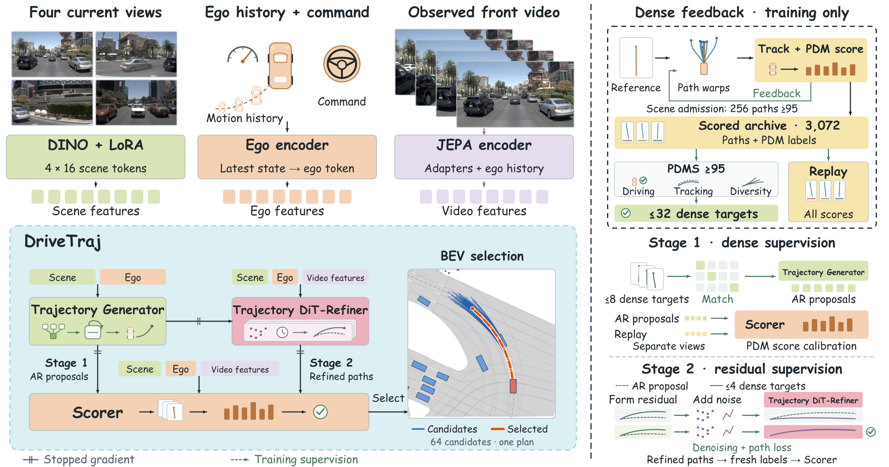

Beyond a Single Human Demonstration:
Learning from Scored Trajectory Alternatives for End-to-End Driving
Driving logs record one executed trajectory, while a planner must generate and compare many feasible alternatives. DriveTraj turns these records into scored trajectory supervision: constrained path construction and screening yield 2.61M high-quality targets from 103.3k real scenes. Dense matching teaches distinct proposals, and replay of successful and failed paths trains their scores. A second stage learns local residual corrections, guided by a pretrained Joint-Embedding Predictive Architecture (JEPA) video encoder adapted to driving observations. DriveTraj-Scale reaches 95.55 NAVTEST PDMS; its Stage 1 planner scores 91.32 NAVTEST EPDMS and 56.13 NAVHARD EPDMS. On 345 HUGSIM scenarios, Stage 2 achieves 56.09 route completion and 46.69 HD-Score.
Method

HUGSIM
High-scoring closed-loop episodes · Four difficulty levels
Selected high-score episodes. Aggregate results below cover all 345 scenarios.
Results
| Model | Stage | NAVTEST PDMS | NAVTEST EPDMS | NAVHARD EPDMS | HUGSIM RC | HUGSIM HD-Score |
|---|---|---|---|---|---|---|
| DriveTraj | 1 | 94.76 | 91.15 | 50.80 | 51.88 | 36.88 |
| DriveTraj | 2 | 95.14 | — | — | 55.22 | 44.05 |
| DriveTraj-Scale | 1 | 95.09 | 91.32 | 56.13 | 54.05 | 43.97 |
| DriveTraj-Scale | 2 | 95.55 | — | — | 56.09 | 46.69 |
EPDMS results use Stage 1 planners with benchmark-specific selection. PDMS: Predictive Driver Model Score; EPDMS: Extended PDMS; RC: route completion. Base: 103.3k real training scenes. Scale: 232.7k real and synthetic scenes.
| Difficulty | Scenarios | RC ↑ | HD-Score ↑ | NC ↑ | DAC ↑ | TTC ↑ | Comfort ↑ |
|---|---|---|---|---|---|---|---|
| Easy | 49 | 84.47 | 75.22 | 93.40 | 98.87 | 91.07 | 92.73 |
| Medium | 126 | 67.90 | 61.51 | 93.87 | 99.11 | 91.27 | 97.22 |
| Hard | 86 | 37.80 | 27.65 | 59.34 | 97.35 | 53.17 | 95.23 |
| Extreme | 84 | 40.56 | 27.31 | 51.34 | 96.61 | 49.38 | 92.69 |
| All | 345 | 56.09 | 46.69 | 74.84 | 98.03 | 71.55 | 94.98 |
All scores on a 0–100 scale. NC: no at-fault collision; DAC: drivable-area compliance; TTC: time-to-collision compliance.